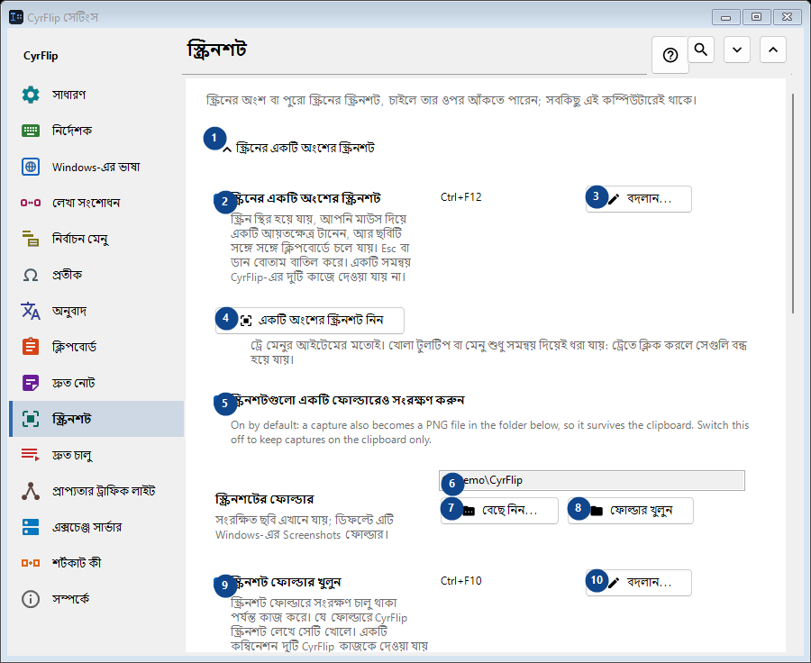
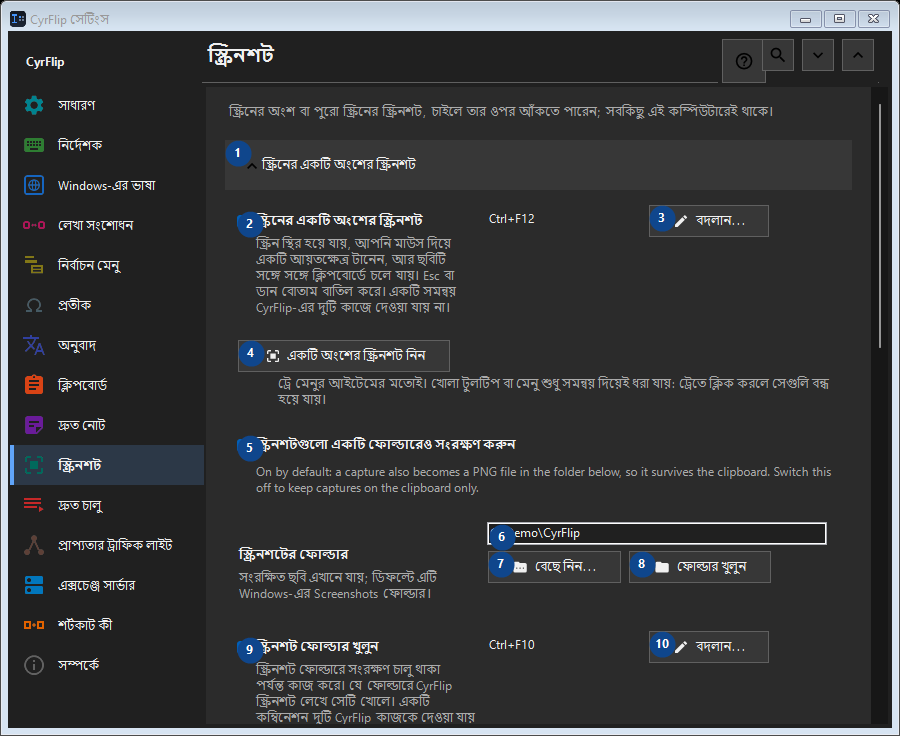

স্ক্রিনশট
এর কাজ
স্ক্রিনের অংশ বা পুরো স্ক্রিনের স্ক্রিনশট, চাইলে তার ওপর আঁকতে পারেন; সবকিছু এই কম্পিউটারেই থাকে।


ব্যবহারের ক্রম
সেটিং সঙ্গে সঙ্গে প্রয়োগ হয়। নির্দিষ্ট ক্রম নেই; নিচের দলগুলি ব্যবহার করুন।
উপাদান
1. স্ক্রিনের একটি অংশের স্ক্রিনশট
উল্লিখিত কাজের জন্য এই নির্দেশ ব্যবহার করুন। মেনে নেওয়ার আগে নিশ্চিতকরণ পড়ুন।
আপনার শর্টকাট2. স্ক্রিনের একটি অংশের স্ক্রিনশট
স্ক্রিন স্থির হয়ে যায়, আপনি মাউস দিয়ে একটি আয়তক্ষেত্র টানেন, আর ছবিটি সঙ্গে সঙ্গে ক্লিপবোর্ডে চলে যায়। Esc বা ডান বোতাম বাতিল করে। একটি সমন্বয় CyrFlip-এর দুটি কাজে দেওয়া যায় না।
আপনার শর্টকাট3. বদলান - স্ক্রিনের একটি অংশের স্ক্রিনশট
উল্লিখিত কাজের জন্য এই নির্দেশ ব্যবহার করুন। মেনে নেওয়ার আগে নিশ্চিতকরণ পড়ুন।
আপনার শর্টকাট4. একটি অংশের স্ক্রিনশট নিন
ট্রে মেনুর আইটেমের মতোই। খোলা টুলটিপ বা মেনু শুধু সমন্বয় দিয়েই ধরা যায়: ট্রেতে ক্লিক করলে সেগুলি বন্ধ হয়ে যায়।
আপনার শর্টকাট5. স্ক্রিনশটগুলো একটি ফোল্ডারেও সংরক্ষণ করুন
On by default: a capture also becomes a PNG file in the folder below, so it survives the clipboard. Switch this off to keep captures on the clipboard only.
আপনার শর্টকাট6. স্ক্রিনশটের ফোল্ডার
পাশের লেবেল অনুযায়ী মান বাছুন বা লিখুন। এগোনোর আগে পরীক্ষা করুন।
আপনার শর্টকাট7. বেছে নিন - স্ক্রিনশটের ফোল্ডার
উল্লিখিত কাজের জন্য এই নির্দেশ ব্যবহার করুন। মেনে নেওয়ার আগে নিশ্চিতকরণ পড়ুন।
আপনার শর্টকাট8. ফোল্ডার খুলুন - স্ক্রিনশটের ফোল্ডার
উল্লিখিত কাজের জন্য এই নির্দেশ ব্যবহার করুন। মেনে নেওয়ার আগে নিশ্চিতকরণ পড়ুন।
আপনার শর্টকাট9. স্ক্রিনশট ফোল্ডার খুলুন
স্ক্রিনশট ফোল্ডারে সংরক্ষণ চালু থাকা পর্যন্ত কাজ করে। যে ফোল্ডারে CyrFlip স্ক্রিনশট লেখে সেটি খোলে। একটি কম্বিনেশন দুটি CyrFlip কাজকে দেওয়া যায় না।
আপনার শর্টকাট10. বদলান - স্ক্রিনশট ফোল্ডার খুলুন
উল্লিখিত কাজের জন্য এই নির্দেশ ব্যবহার করুন। মেনে নেওয়ার আগে নিশ্চিতকরণ পড়ুন।
আপনার শর্টকাট11. পুরো স্ক্রিনের স্ক্রিনশট
উল্লিখিত কাজের জন্য এই নির্দেশ ব্যবহার করুন। মেনে নেওয়ার আগে নিশ্চিতকরণ পড়ুন।
আপনার শর্টকাট12. পুরো স্ক্রিনের স্ক্রিনশট
এক চাপ: সব ডিসপ্লে এক ছবি হিসেবে ধরা হয়ে সরাসরি ক্লিপবোর্ডে চলে যায়। স্ক্রিনে কিছুই স্থির হয় না।
আপনার শর্টকাট13. বদলান - পুরো স্ক্রিনের স্ক্রিনশট
উল্লিখিত কাজের জন্য এই নির্দেশ ব্যবহার করুন। মেনে নেওয়ার আগে নিশ্চিতকরণ পড়ুন।
আপনার শর্টকাট14. পুরো স্ক্রিনের স্ক্রিনশট নিন
ট্রে মেনুর আইটেম "পুরো স্ক্রিনের স্ক্রিনশট"-এর মতোই।
আপনার শর্টকাট15. স্ক্রিনশটের ওপর আঁকুন
উল্লিখিত কাজের জন্য এই নির্দেশ ব্যবহার করুন। মেনে নেওয়ার আগে নিশ্চিতকরণ পড়ুন।
আপনার শর্টকাট16. স্ক্রিনশটের ওপর আঁকুন
স্ক্রিনশটের পর হিমায়িত ছবিটি স্ক্রিনে থাকে - তার ওপর উপবৃত্ত, আয়ত, রেখা ও তীর আঁকুন।
আপনার শর্টকাট17. আঁকার সঙ্গে অংশের স্ক্রিনশট
Capture a selected region and draw on it. One chord cannot belong to two CyrFlip actions.
আপনার শর্টকাট18. বদলান - আঁকার সঙ্গে অংশের স্ক্রিনশট
উল্লিখিত কাজের জন্য এই নির্দেশ ব্যবহার করুন। মেনে নেওয়ার আগে নিশ্চিতকরণ পড়ুন।
আপনার শর্টকাট19. আঁকার সঙ্গে পুরো স্ক্রিনের স্ক্রিনশট
Capture every display as one picture and draw on it. One chord cannot belong to two CyrFlip actions.
আপনার শর্টকাট20. বদলান - আঁকার সঙ্গে পুরো স্ক্রিনের স্ক্রিনশট
উল্লিখিত কাজের জন্য এই নির্দেশ ব্যবহার করুন। মেনে নেওয়ার আগে নিশ্চিতকরণ পড়ুন।
আপনার শর্টকাট21. অংশের স্ক্রিনশট নিন ও আঁকুন
"আঁকার সঙ্গে অংশের স্ক্রিনশট" সমন্বয়ের মতোই।
আপনার শর্টকাট22. পুরো স্ক্রিনের স্ক্রিনশট নিন ও আঁকুন
"আঁকার সঙ্গে পুরো স্ক্রিনের স্ক্রিনশট" সমন্বয়ের মতোই।
আপনার শর্টকাট